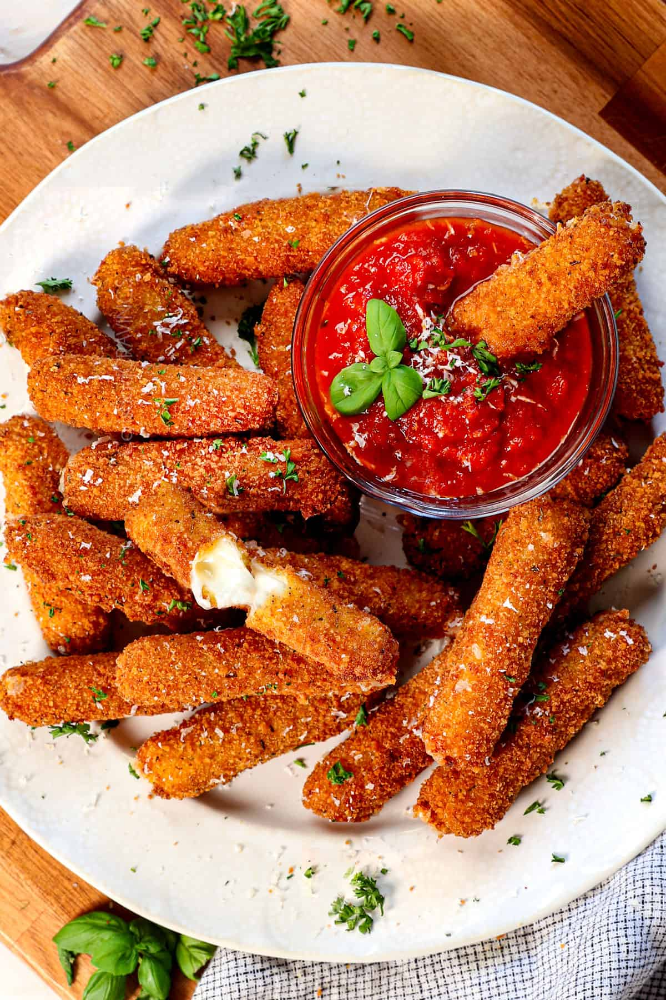

Mozzarella Sticks

Mozzarella sticks are crispy on the outside, melty on the inside, and totally addictive.
They're made by coating mozzarella cheese in seasoned breadcrumbs and frying them to golden perfection.
Perfect as an appetizer, party snack, or late-night craving, they're best served hot with marinara sauce, ranch, or your favorite dip.
The key is freezing the cheese beforehand to keep it gooey, not messy.
Ingredients:
- 12 sticks of mozzarella cheese (or mozzarella cut a block into ½-inch sticks)
- 2 large eggs
- 1 cup all-purpose flour
- 2 cups Italian-style breadcrumbs
- 1 tsp garlic powder
- 1 tsp dried oregano
- Salt & pepper to taste
- Oil for frying (vegetable or canola)
- Marinara sauce (for dipping)
Steps:
- Freeze the cheese: Place mozzarella sticks in the freezer for at least 1 hour to prevent melting too quickly when frying.
- Set up your breading station:
- Bowl 1: Flour
- Bowl 2: Beaten eggs
- Bowl 3: Breadcrumbs mixed with garlic powder, oregano, salt, and pepper
- Double-dip: Coat each stick in flour, dip into egg, roll in breadcrumbs—then repeat the egg and breadcrumb steps for an extra-crispy shell.
- Optional but helpful: Freeze breaded sticks again for 30 minutes to firm up the coating.
- Heat the oil: Bring oil to 350°F (175°C) in a deep pan. Fry mozzarella sticks in small batches for 1–2 minutes until golden brown.
- Drain & serve: Let them rest on paper towels briefly, then serve hot with warm marinara or your favorite sauce.
Home